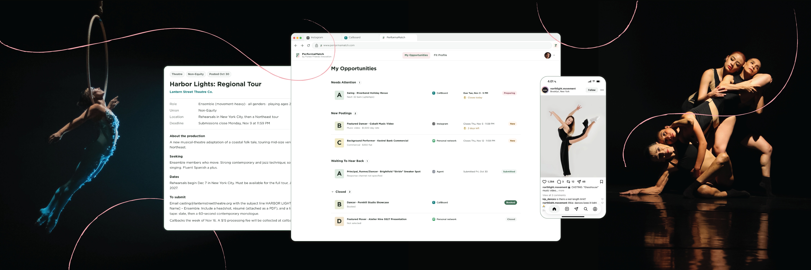
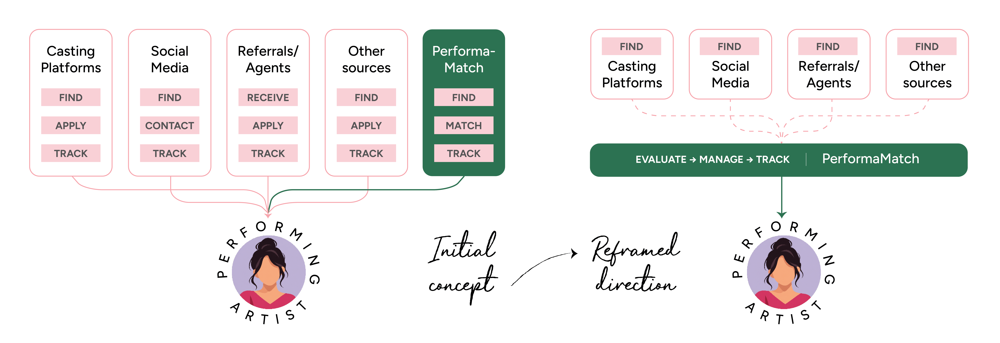

PerformaMatch
PerformaMatch wanted to play a part in the future of casting. My role was to figure out which.

PerformaMatch started with a vision: an equitable platform that uses AI to give performing artists more control over their casting journey. Dancers, actors, and models could use fit scoring, video analysis, and a calendar-integrated submission manager to find and manage opportunities.
I joined the project to test the assumptions underneath that vision. Research showed that artists were already stretching themselves across casting platforms, social media, referrals, and offline channels, while paid casting services added pressure to already limited budgets. So instead of asking performers to move to a brand new website, I reframed PerformaMatch as a cross-platform management layer for the places performers already frequented.
ACT I · OPENING SCENE
The founder had an ambitious vision that needed validating.
When my founder friend introduced her latest venture, PerformaMatch, the mission immediately intrigued me. Having briefly fancied myself a background actor at some point, I also had my own taste of casting websites. The process can be a headache to navigate, and access is uneven, so I could see why AI might help artists discover opportunities more efficiently.
What I was less convinced by was the need for another casting platform.
By the time I joined, the product direction was already taking shape. I wanted to understand where the existing casting industry was actually failing performers, whether AI could help, and whether a new marketplace could realistically earn a place in an already crowded industry.
I took three assumptions into the research:
- AI personalization could improve casting relevance. Better matching could surface roles based on skills, experience, goals, and fit.
- Performers may value relevance over volume. Fewer, better-matched opportunities might be more useful than a large stream of weak matches.
- Equity could differentiate the platform. Reducing financial barriers and bias could give PerformaMatch a meaningful reason to exist.
The sample was small, so I prioritized range.
The founder envisioned PerformaMatch working across disciplines, career stages, locations, and representation status.
Certainly, designing for everyone is every founder’s dream.
I looked for performing artists across performance fields and career stages, leaning toward earlier-career performers because I expected them to feel the access and discovery problems more acutely. With only about two weeks to recruit, most participants came through my social network and were based in New York.
ACT II · RISING CONFLICT
Under the weight of reality, the original assumptions had to bend.
Relevance couldn’t come at the expense of lead volume.
Participants wanted help finding better-matched opportunities, but not if personalization narrowed the market available to them. Breadth and relevance were complementary needs: 17 of 22 respondents (77%) ranked the number of available roles among their top platform priorities, while 13 (59%) prioritized the relevance of suggested roles.
But then came the elephant in the room: where would PerformaMatch get enough job inventory to make matching useful? The concept depended on casting professionals posting directly. The team had also explored integrations with established casting platforms but couldn’t find a viable path. Without those integrations, PerformaMatch would depend heavily on building its own supply, while established platforms already held the listings and industry connections performers relied on. Research showed that performers continued returning to those platforms despite frustrations with costs, navigation, communication, and hard-to-find information. AI and better UX alone could not manufacture the listings and networks that gave those platforms their advantage.
In my sample, access often meant being able to afford participation.
Participants described the accumulated cost of staying competitive: subscriptions, paywalls, premium services, training, materials, and maintaining accounts across several platforms. 11 of 22 respondents (50%) cited difficulty affording premium subscriptions as a reason they had felt excluded or overlooked, making it the most-selected barrier in that question. Representation and discrimination still mattered, but cost, visibility, and transparency surfaced more consistently in participants’ day-to-day experiences.
“To be competitive in this industry, you have to spend a lot of money. That’s completely antithetical to the idea of diversity, equity, and inclusion.”
That left me with an uncomfortable question: if performers were already paying for access to opportunity, would another paid platform really redistribute it?
Meanwhile, the actual casting workflow was scattered everywhere.
Even when performers found an opportunity, the work rarely stayed inside one product. 21 of 22 respondents (95%) found opportunities through social media, 18 (82%) through casting platforms, and 15 (68%) through word of mouth. Ten (45%) also named navigating multiple platforms as one of the most frustrating parts of casting.
Discovery was only the beginning. Performers were also balancing day jobs, training, self-tape deadlines, live auditions, preparation, submissions, and callbacks. Once they found a promising opportunity, they still had to keep track of what needed to happen next. For some performers, time was part of the access problem.
“[…] the people who have more flexible day jobs […] will be the ones to submit first. And they will be the ones to be more likely to be cast.”
Representation came up as well. 9 of 22 respondents (41%) named lack of representation among the reasons they felt excluded or overlooked, and 9 (41%) prioritized access to roles typically restricted to agents or industry insiders. Five selected both. Interviews added another dimension: without an agent, performers weren’t just missing access to some opportunities; they were also left to do more of the searching and managing themselves.
“Back in the day before I was represented, I was checking everything: Equity, Playbill, Actors Access, Backstage.”
AI matching needed more than a convincing score.
AI could help performers compare opportunities, but I couldn’t assume they would trust its recommendations. When asked what influenced their trust in AI role matching, 10 of 22 respondents (45%) selected clear explanations of why matches happen, while 9 (41%) selected visible human oversight. That suggested a direction worth exploring: matching should make its reasoning visible and leave room for performers to disagree, rather than presenting an unexplained score as a definitive judgment.
Not every important problem was ours to solve.
Participants also wanted clearer submission status and feedback, but reliable casting-side updates depended on participation from casting professionals. A performer-side MVP could organize the work around a submission, but it couldn't independently show what was happening on the casting side. That distinction forced me to consider where the product could realistically create value, and where it couldn't.
ACT III · PLOT TWIST
The product boundary was in the wrong place.
The original model assumed opportunities would start inside PerformaMatch: inventory → AI matching → application → tracking. But performers’ job searches already stretched far beyond any one platform. PerformaMatch didn’t need to own where an opportunity came from to help make sense of what happened next.
The research pointed to more than one possible pivot.
I could have recommended abandoning the marketplace entirely, aggregating opportunities from elsewhere, or narrowing PerformaMatch into a standalone performer tool. Each solved part of the problem, but either depended on access to data we didn’t control or moved much further from the platform the founder still wanted to build.
I was looking for something in between: a model that could create value before the marketplace had scale, fit the way performers already found work, and still leave room for that broader vision.

How might we help performers understand, prioritize, and manage opportunities across the platforms they already use, without asking them to abandon those platforms?
INTERMISSION
A utility can create value with one performer.
A marketplace cannot.
ACT IV · ROLE CHANGE
AI stopped vying for the lead role and fell back as a supporting player.
What surfaced most clearly in the research was the burden of managing opportunities across scattered channels. That became the product opportunity: AI could help performers make sense of what they found, wherever they found it. The intended payoff was time: less spent searching and on admin tasks, more spent improving their craft.
Because trust in AI was already fragile, the analysis needed to show its reasoning and keep the performer in control. A performer could find a role through a casting platform, social media, email, or word of mouth, then bring it into PerformaMatch for AI-assisted analysis. They could track and update opportunities regardless of where the lead was found or the application was submitted.
Once saved, opportunities could be managed in one place. A dashboard could track them through preparation, submission, callbacks, and follow-up. Over time, that history could support deeper personalization and insight.
The principle stayed simple: PerformaMatch could interpret and assist. The performer would decide.

ACT V · THE PITCH
The workflow's value should be proven before the platform is built.
Given the cost pressure that surfaced in research, asking performers to pay for another platform before experiencing its value felt unrealistic. I proposed a freemium model: a free browser extension for identifying, evaluating, and saving opportunities, with deeper management tools, AI video and material analysis, and career development support reserved for subscription.
While the team was working toward an MVP of the full platform, I proposed a smaller proof of concept to test the cross-platform workflow first. I worked with engineering to identify a feasible initial scope: user-triggered capture, structured opportunity records, basic profile comparison, and lightweight tracking.
The business case went beyond reducing development costs. By attracting performers through a free utility and seeing whether they returned to use it regularly, we could build an initial user base and gather behavioral evidence of demand. That evidence could help us decide whether to invest in the full platform and strengthen the case for future fundraising.
For this first test, I didn't think sophisticated AI was necessary. A rules-based comparison could help us learn whether performers found matching and prioritization useful. If the concept proved valuable, we could gradually reduce capture friction and introduce more advanced AI capabilities, integrations, and management tools.
The core loop was simple.
Performers could bring in a casting lead through a screenshot, pasted text, URL, or free-text entry. PerformaMatch would extract the information and structure it into a consistent opportunity record, identify requirements, materials, and deadlines, analyze the role against the performer’s profile and preferences, and let them save it for tracking through preparation, submission, and callbacks. The first version would not automatically capture opportunities or integrate with existing casting platforms.
The extra input step was intentional. I wanted to test whether the analysis and management loop was useful before investing in automatic capture or deeper integrations.
The test I proposed needed to answer three questions:
- Utility: Will performers capture opportunities more than once, and from more than one source?
- Workflow: Will saved opportunities move from discovery into preparation and submission?
- Long-term value: Will performers return to review or update opportunities they have already saved?
I would also look at what performers corrected in the analysis and why. Repeat use would not prove long-term adoption, improved callback or booking rates, or more equitable outcomes. Those would require a larger sample and longer observation.
EPILOGUE · CURTAIN CALLS
The founder agreed with the research, but the production timeline didn’t.
The team adopted the cross-platform workflow direction and is continuing to develop it. The browser extension now sits within the product as a core feature, following the staged approach I had proposed. The original marketplace also continued toward launch, so the result was not a full pivot, but the workflow strategy became part of PerformaMatch’s product direction.
Just another messy start-up origin story.
What I learned
I came into PerformaMatch wanting to understand whether AI and a new marketplace were really the strongest path toward the equity the founder envisioned. I still believe AI can help narrow the access gap, but as a management layer instead of a new marketplace. It could save performers time on administrative work, give those without representation some of what an agent provides, and give every performer more time to develop their artistry. Eventually, it could serve as a digital career coach or manager.
The project also cemented how I think about business timing and strategy. Foundational research has the most leverage while strategic decisions are still reversible. When joining a product already in motion, I’d first map what has already been committed, what is still flexible, and where research can realistically change direction. Maybe next time, I can be in the room where it happens from the beginning.